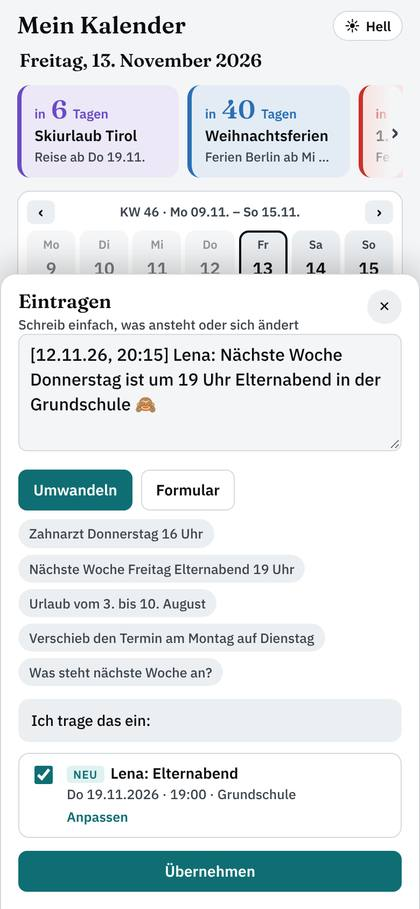
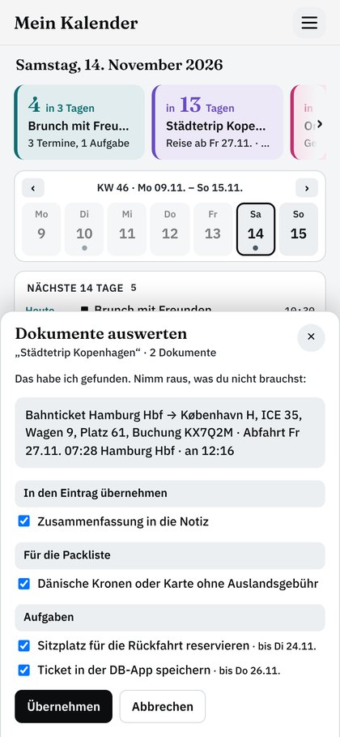
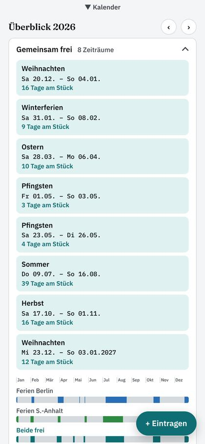

Jeden Morgen
Ein Blick – alles im Griff
Was in den nächsten 3 Tagen ansteht, Countdowns bis Reise, Geburtstag, Urlaub und Ferien – dazu deine Woche und Aufgaben.
Er erinnert nicht nur an Termine – sondern auch an das Drumherum.
Nachrichten werden zu Terminen, Reisen bekommen automatisch ihre To-dos, und du siehst sofort, wann ihr wirklich gemeinsam frei habt.
Kalender öffnenEinfach eine WhatsApp oder Mail hineinkopieren – oder in eigenen Worten schreiben.
Was in den nächsten 3 Tagen ansteht, Countdowns bis Reise, Geburtstag, Urlaub und Ferien – dazu deine Woche und Aufgaben.

Datum, Uhrzeit, Ort und Personen werden erkannt – auch aus kopierten Nachrichten.

Tickets und Buchungen einfach anhängen – er liest Abfahrt, Sitzplatz und Check-in heraus und macht daraus To-dos und Packpunkte. Dazu Vignette, Visum und Ausweise: rechtzeitig erinnert.

Freie Wochenenden, Ferien und Brückentage auf einen Blick – auch für zwei Bundesländer.
Die meisten Kalender merken sich, was du einträgst. Dieser kümmert sich auch um das, was du sonst im Kopf behalten müsstest.